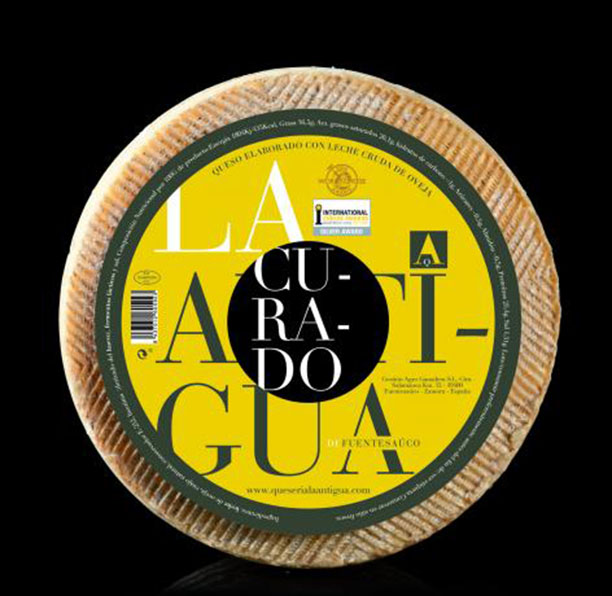

|  | Formatge d'ovella elaborat amb llet crua, amb una curació d'entre 4 i 6 mesos. En un format mini, d'1 kg, però amb les mateixes propietats i característiques que tots els nostres formatges. Escorça natural amb oli d'oliva que ajuda a la seua conservació durant tots els seus mesos de maduració, i marcada amb el *cincho d'espart. Pasta de color ivori groguenc, premsada i ferm, amb ulls de grandària xicoteta-mitjana repartits uniformement per tot el tall. Posseeix unes aromes i olors agradables, amb xicotets tocs d'anou. Més en: http://www.queserialaantigua.com/nuestros-quesos/queso-de-oveja-la-antigua-curado-mini |